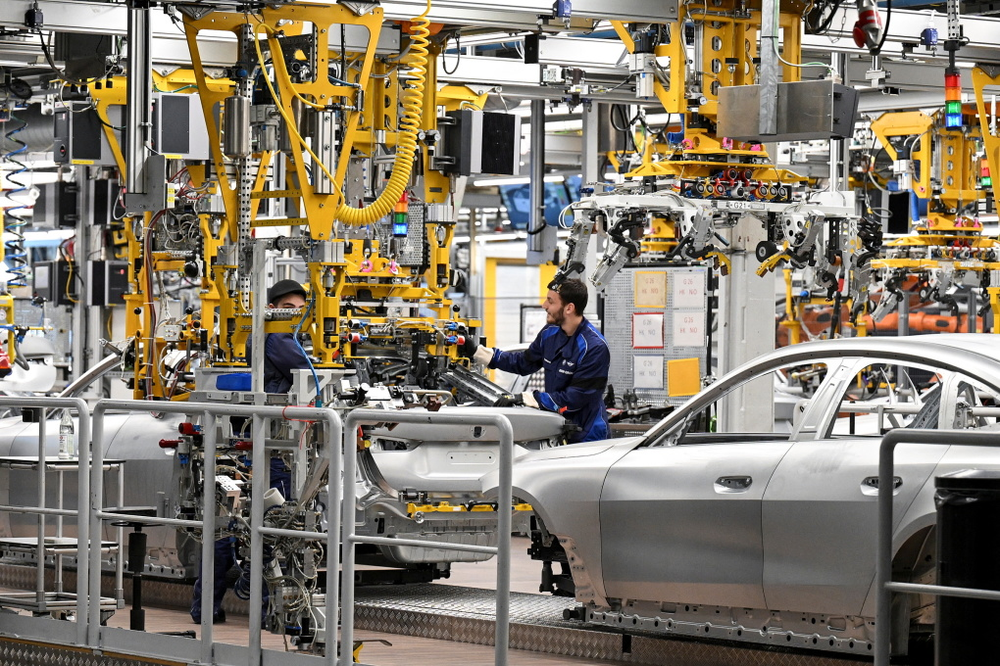

Kinh tế Đức có thể đang suy thoái
Ngân hàng Trung ương Đức (Bundesbank) cho rằng GDP quý I có thể tiếp tục giảm, đẩy đầu tàu kinh tế châu Âu vào suy thoái. Hôm 21/3, Bundesbank công bố báo cáo định kỳ, cho thấy kinh tế Đức có thể đã rơi vào suy thoái trong quý này. Tăng trưởng tiêu dùng yếu và nhu cầu sản phẩm công nghiệp thấp vẫn đang gây sức ép lên đà phục hồi của Đức. Quý IV/2023, GDP nước này đã giảm 0,3% so với quý trước đó. Về lý thuyết, một nước sẽ rơi vào suy thoái, khi có hai quý liên tiếp tăng trưởng âm. Một năm qua, nền kinh tế lớn nhất châu Âu vẫn đang vật lộn với giá nhiên liệu tăng và lãi suất đi vay tăng cao. Tuy nhiên, các số liệu gần đây, từ báo cáo niềm tin doanh nghiệp của Viện nghiên cứu ZEW đến chỉ số giá sản xuất (PMI) đều cho thấy Đức đã chạm đáy. PMI Đức chỉ còn 41,6 điểm trong tháng 3. Đây là mức thấp nhất 5 tháng. Tuy nhiên, phân tích của Bundesbank cho thấy Đức chưa thể phục hồi trong ngắn hạn. 2024 được dự báo vẫn là năm ảm đạm với nền kinh tế được coi là động cơ tăng trưởng của châu Âu. "Lĩnh vực công nghiệp đang trong giai đoạn yếu. Tiêu dùng cá nhân cũng không được kỳ vọng bật tăng mạnh trong ngắn hạn", báo cáo viết.

Số đơn hàng mới, cả trong nước và xuất khẩu, hiện ở mức thấp. Lãi suất cao cũng đang ghìm lại nhu cầu nội địa, đặc biệt là nhu cầu đầu tư. Sự thiếu chắc chắn trong các vấn đề lớn, như chính sách về khí hậu, đã khiến nhà đầu tư chần chừ. Dù vậy, lạm phát đang giảm và lương danh nghĩa cũng tăng. Điều này đồng nghĩa năng lực chi tiêu của người dân đang lên cao. Lạm phát được dự báo tiếp tục đi xuống trong vài tháng tới. Bên cạnh đó, bất chấp triển vọng kinh tế ảm đạm, các doanh nghiệp vẫn giữ chân nhân viên. Tỷ lệ thất nghiệp tại đây được dự báo chỉ tăng nhẹ trong tháng tới. Các doanh nghiệp Đức đang chật vật tuyển nhân viên khi nền kinh tế mở cửa trở lại sau đại dịch. Vì vậy, họ vẫn giữ người lao động, bất chấp cả năm không tăng trưởng. Các doanh nghiệp cho rằng chi phí ổn định nhân lực hiện tại vẫn còn thấp hơn nhiều so với khi nền kinh tế khởi sắc.